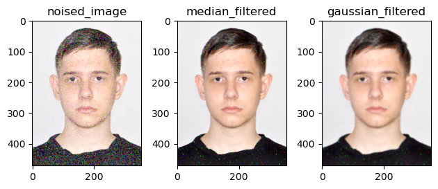
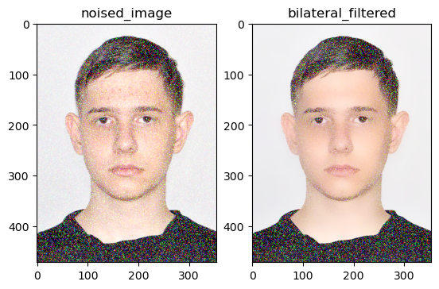

Code
# Імпортуємо пакети
import cv2 as cv
import numpy as np
import matplotlib.pyplot as plt
import sys
# print(f'version cv2: {cv.__version__}')
print('version cv2: %s' % cv.__version__)version cv2: 4.10.0Мета: знайомство з просторовими методами фільтрації зображень засобами OpenCV у середовищі Anaconda із застосуванням Jupyter Notebook засобами мови програмування Python.
Просторовий лінійний фільтр задається лінійної згорткою
\[ g(i, j) = \sum_{k, l} f(i + k, j + l) h(k, l), \]
де \(f(i, j)\) – вхідне зображення; \(g(i, j)\) – вихідне зображення; \(h(k, l)\) – матриця коуфіцієнтів фільтра, яка називається ядром.
Фільтр повністю задається своїми кофіцієнтами.
Наведемо деякі приклади.
# Імпортуємо пакети
import cv2 as cv
import numpy as np
import matplotlib.pyplot as plt
import sys
# print(f'version cv2: {cv.__version__}')
print('version cv2: %s' % cv.__version__)version cv2: 4.10.0# імпортуємо RGB-зображення
image = cv.imread('orig_images/rose.png')
print(f'image shape/dimentions: {image.shape}')
print(f'image number of pixel: {image.size}')
# розділяємо зображення на канали
red, green, blue = cv.split(image)
# формуємо напівтонове зображення
image_gray = cv.imread('orig_images/rose.png', 0)
print(f'grey image shape/scale: {image_gray.shape}')
print(f'grey image number of pixel: {image_gray.size}')
# візуалізуємо зображення
cv.imshow('color image', image)
cv.waitKey(0)
cv.destroyAllWindows()image shape/dimentions: (1180, 786, 3)
image number of pixel: 2782440
grey image shape/scale: (1180, 786)
grey image number of pixel: 927480# Візуалізація за допомогою matplotlib
# plt.imread('rose.png')
plt.gray()
# plt.subplot(111)
# plt.imshow(image_gray)
# plt.title('Gray Image')
# plt.show()
# plt.savefig('Gray_image.png')
# Реалізація низькочастотно фільтра на основі простого середнього ковзного з параметрами вікна 10 х 10
dst = cv.blur(image_gray, (10, 10))
# Побудова і вивід зображення у файл
plt.subplot(121)
plt.imshow(image_gray)
plt.title('image_gray')
plt.subplot(122)
plt.imshow(dst)
plt.title('image_binary')
# plt.savefig('image_binary.png')
plt.show()Завдання для самостійної роботи. * Реалізувати фільтр на основі ядра Гауса * Написати процедуру, яка б зашумлювала нормальним шумом з параметрами \((n, \mu, \sigma)\) зображення * Взявши за основу власний портрет, зашумити його нормальним шумом * Реалізувати медіанний фільтр і продемонструвати послідовно роботу медіанного і гаусового фільтру, оптимально підібравши і обґрунтувавши значення параметрів * Реалізувати двосторонній фільтр * Написати процедуру, до складу якої б входили всі низькочастотні фільтри, які досліджуються в цій лабораторній роботі, а вибір потрібного задавався відповідним вхідним параметром.
# Візуалізація за допомогою matplotlib
def add_gaussian_noise(image, mean=0, std=1):
noise = np.random.normal(mean, std, image.shape).astype(np.uint8)
noisy_image = cv.add(image, noise)
return noisy_image
image = cv.imread('orig_images/i_image.jpg')
noised_image = add_gaussian_noise(image)
dst_Median = cv.medianBlur(noised_image, 3)
dst_Gauss = cv.GaussianBlur(noised_image, (5, 5), 2)
# Побудова і вивід зображення у файл
plt.subplot(131)
plt.imshow(cv.cvtColor(noised_image, cv.COLOR_BGR2RGB))
plt.title('noised_image')
plt.subplot(132)
plt.imshow(cv.cvtColor(dst_Median, cv.COLOR_BGR2RGB))
plt.title('median_filtered')
plt.subplot(133)
plt.imshow(cv.cvtColor(dst_Gauss, cv.COLOR_BGR2RGB))
plt.title('gaussian_filtered')
plt.tight_layout()
plt.show()
\[I^{filtered}(x)=\frac{1}{W_p}\sum\limits_{x_i\in\Omega}I(x_i)f_r(||I(x_i)-I(x)||)g_s(||x_i-x||)\] де \(W_p\) це: \[W_p=\sum\limits_{x_i\in\Omega}f_r(||I(x_i)-I(x)||)g_s(||x_i-x||)\] * \(I^{filtered}\) це відфільтроване зображення * \(I\) оригінальне зображення * \(x\) координати поточного пікселя * \(\Omega\) вікно відцентроване у \(x\), тому \(x_i\in\Omega\) це інший піксель * \(f_r\) це діапазон ядра для згладжування різниць в інтенсивностях * \(g_s\) є просторовим ядром для згладжування різниць у координатах
# Реалізація низькочастотно фільтра на основі простого середнього ковзного з параметрами вікна 10 х 10
i = 15
dst_bilateraled = cv.bilateralFilter(noised_image, i, i * 2, i / 2)
# Побудова і вивід зображення у файл
plt.subplot(121)
plt.imshow(cv.cvtColor(noised_image, cv.COLOR_BGR2RGB))
plt.title('noised_image')
plt.subplot(122)
plt.imshow(cv.cvtColor(dst_bilateraled, cv.COLOR_BGR2RGB))
plt.title('bilateral_filtered')
plt.show()
case = int(input(" Яким методом відфільтрувати?\n 1. Просте середє ковзне\n 2. Медіана\n 3. Гауссом\n 4. Двостороннім\n Введіть число >> "))
if case not in range(1, 5):
print("Ви ввели неправильний переметр. Перезапустіть і спробуйте ще раз")
else:
match case:
case 1:
dst = cv.blur(image_gray, (10, 10))
case 2:
dst = cv.medianBlur(noised_image, 3)
case 3:
dst = cv.GaussianBlur(noised_image, (17, 17), 2)
case 4:
i = 15
dst = cv.bilateralFilter(noised_image, i, i * 2, i / 2)
plt.subplot(121)
plt.imshow(cv.cvtColor(noised_image, cv.COLOR_BGR2RGB))
plt.title('noised_image')
plt.subplot(122)
plt.imshow(cv.cvtColor(dst, cv.COLOR_BGR2RGB))
plt.title('filtered_image')
plt.show() Яким методом відфільтрувати?
1. Просте середє ковзне
2. Медіана
3. Гауссом
4. Двостороннім
Введіть число >> 3Створити Notebook-документ <lab_1_StudentLastName> за допомогою Jupyter Notebook. (Див. тут, тут і тут).
Відобразити в робочому документі (“зошиті” ipython) виконання пунктів 1-2 наведених вище, скориставшись інтерактивними посиланнями на відповідну документацію. Та виконати Завдання для самостійної роботи В якості зображення використати власний портрет, отриманий за допомогою цифрової камери
Робочий документ оформити у вигляді Notebook-документу (файл .ipynb).
Дати відповіді на контрольні запитання.
Скомпілювати звіт у форматі .html. Для цього необхідно завантажити термінал і у командному рядку запустити наступну команду:
jupyter nbconvert lab_1_StudentLastName.ipynb --to html
lab_1_StudentLastName.ipynb та lab_1_StudentLastName.html